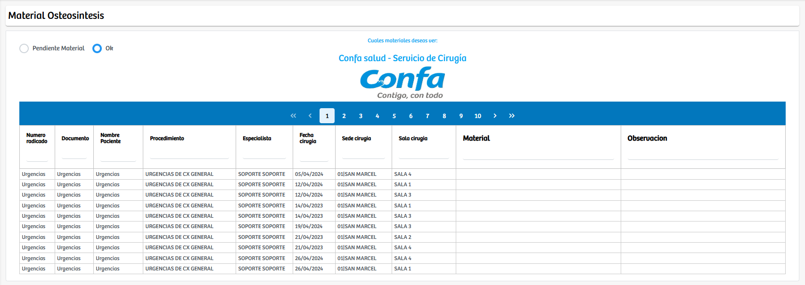

Modulos Sas-Web
Funcionalidades
Material Osteosintesis
El módulo Material Osteosintesis permite gestionar y visualizar el estado del material de osteosíntesis asociado a las cirugías programadas. La vista del módulo se divide en dos secciones principales que pueden alternarse mediante un checkbox:
- Pendiente Material: donde se listan todas las cirugías que aún requieren validar o confirmar el material necesario.
- Ok: donde se muestran los casos en los que el material ya fue verificado o aprobado.
En ambas vistas se despliega una tabla detallada que incluye información relevante como número de radicado, documento del paciente, nombre, procedimiento quirúrgico, especialista, fecha de cirugía, sede y sala asignada, además del campo de Material y un espacio para observaciones. En el caso de los registros pendientes, cada fila cuenta con un botón "Ok" que permite marcar manualmente que el material ha sido confirmado o gestionado.
Este módulo proporciona una herramienta clara y centralizada para realizar el control del material quirúrgico especializado, facilitando la coordinación entre cirugía, central de suministros y logística, y asegurando que cada procedimiento cuente con los elementos necesarios antes de su realización.